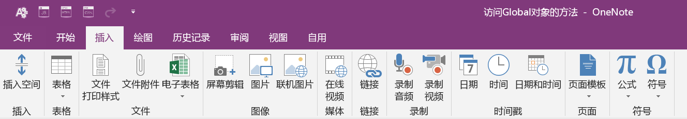
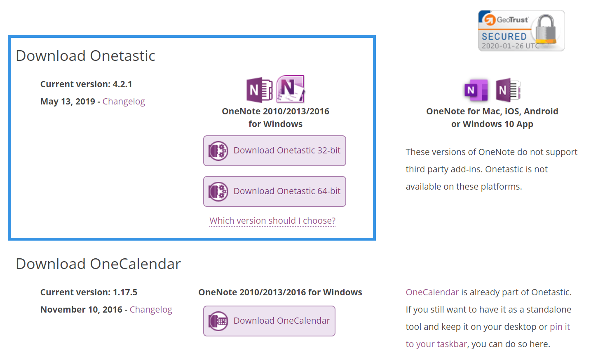
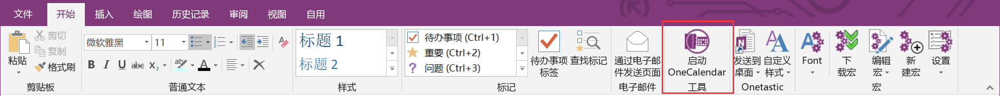
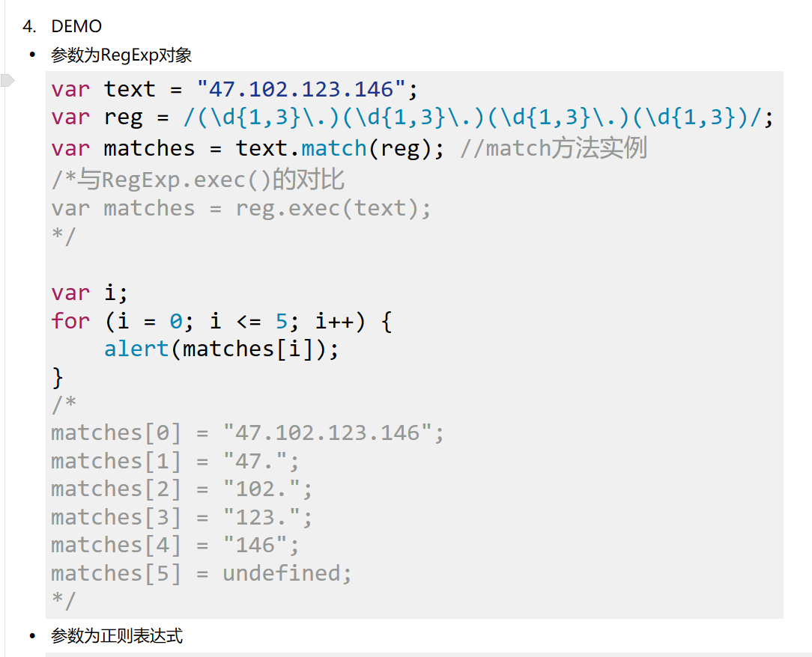
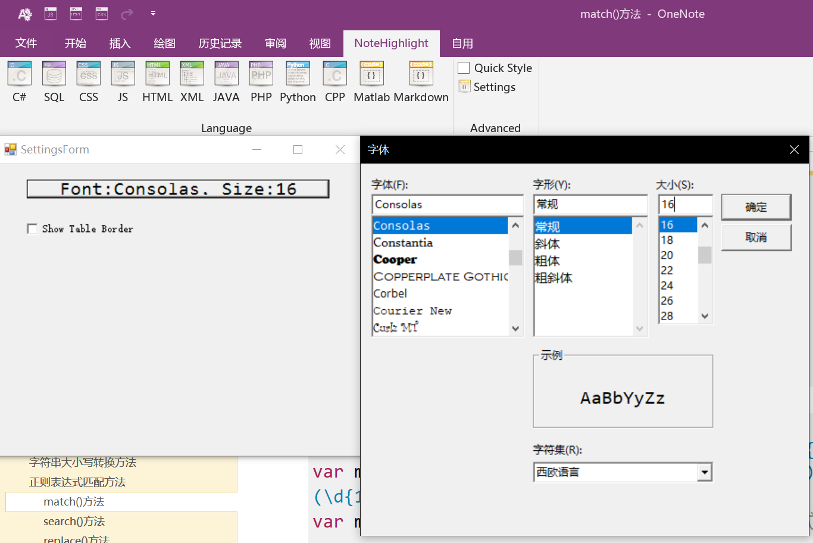
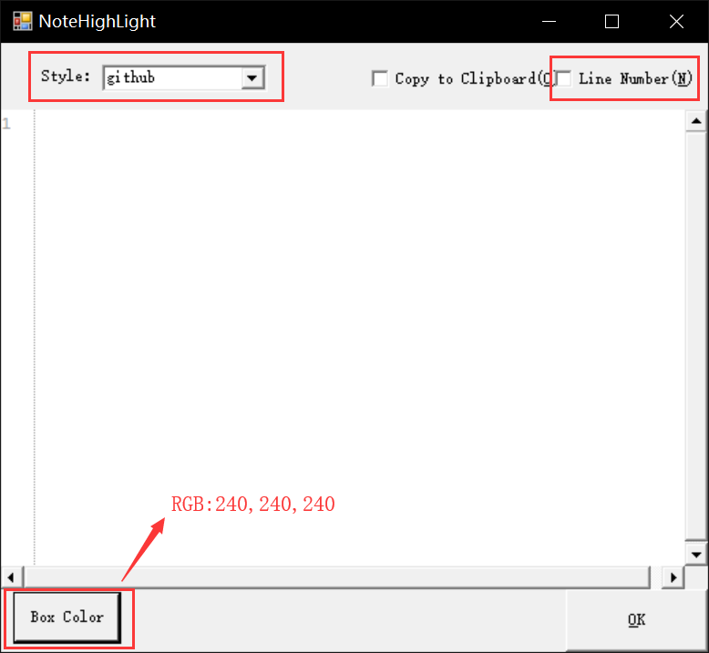
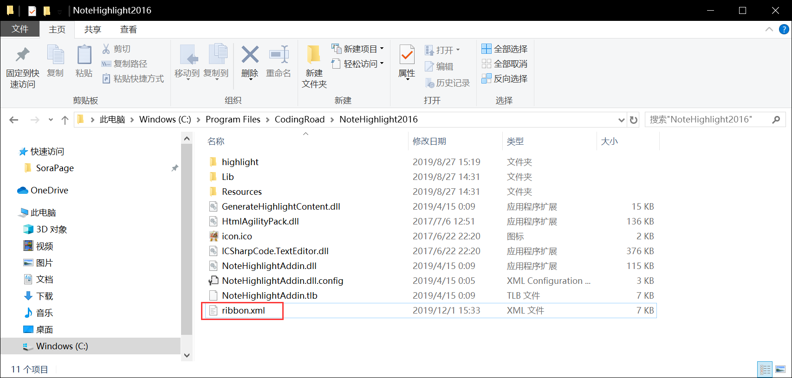
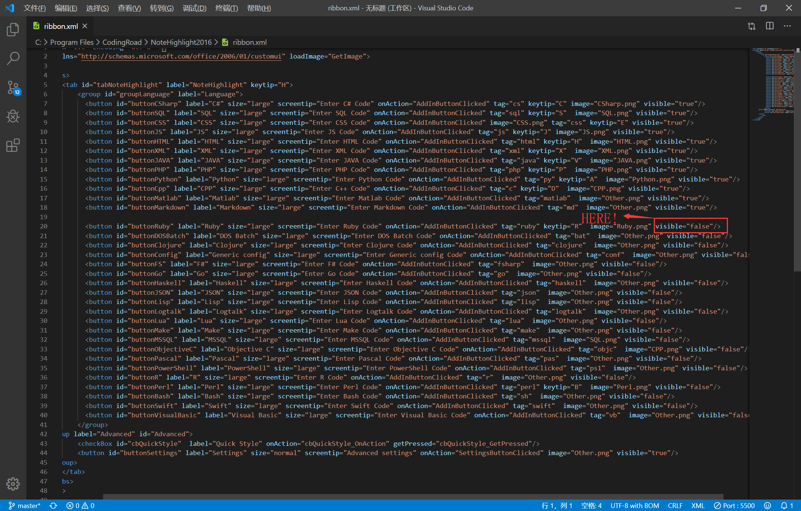

一.前言
这篇文章就只讲两个OneNote插件的使用（基于OneNote2016）
- Onetastic：增加宏操作，用于解决OneNote中英文字体不统一的bug
- NoteHighlight2016：代码高亮效果
这篇文章就只讲两个OneNote插件的使用（基于OneNote2016）
因为2016版有很齐全的功能区
我是很不能理解为什么巨硬放弃了对OneNote桌面版的更新的（在office2019中是没有OneNote的），所以2016版是OneNote最后的桌面版。
现在仍在更新的OneNote是UMP版的，但是这版竟然阉割了功能区的很多功能，蜜汁操作。因此，在UMP版没完善之前，我觉得还是2016版比较香。
2016版的数据是无缝式同步的，就是说不同版本之间的OneNote都可以进行同步，但是由于服务器不在国内，同步时最好还是搭个梯子。
OneNote默认字体是Calibri，通常会被用户改成微软雅黑。但是这一改问题就来了，输入中文时是微软雅黑字体，你接着输入英文或者数字时就会莫名其妙地蹦回Calibri。 更让人不可思议的是，这个小bug竟然十多年来没有得到修复？？
Step-1 下载软件：官网上下载并安装Onetastic插件（下载地址打不开请连SSR）。必须下载蓝色框框里的。

Step-2
下载宏:在OneNote功能区的“开始”选项卡里找到下载宏，搜索微软雅黑，建议下载“Calibri2微软雅黑”这个宏。如果下载全页改为微软雅黑，后面要讲的那个插件插入代码的字体可能会受到影响。
Step-3 使用宏:在“宏”子选项卡里有个font，按一下里面就有刚刚下载好的宏。
Tips:可以将宏右键添加到快速访问工具栏，然后就能通过“Alt+数字”的快捷键运行对应的宏。
安装Onetastic后，在“开始”选项卡里也会多出个Onecalendar，这个小工具会记录你每天OneNote的 摸鱼 学习日常，可以一看。
Onetastic的宏在使用一定次数后就必须给钱，想继续白嫖的话，打开OneNote，在断网的情况下运行一次宏，再联网时会发现运行宏不会再提醒你交钱了。
NoteHighlight这个插件可以让你的代码在OneNote中更显眼，如下图。
Step-1 下载插件:github上下载并安装，64位OneNote下载NoteHighlight2016.msi，32位下载NoteHighlight2016x86.msi
Step-2.1 设置插件:安装完成后，会在OneNote功能区选项卡中多出个NoteHighlight，在Settings把字体设为Consolas，字体大小设为16
Step-2.2 设置插件:在language那栏点开你需要的语言，弹出的选项框里选择代码高亮的风格，建议去掉Line Number选项，Box Color自定义为浅灰色（灰色三个RGB值相等，越大越偏向白色），然后就可以输入代码进行尝试了。
当前版本存在的bug：在文本后方进行代码插入时，代码块会自动移到最上方
解决办法：在右边空白区域运行插件后再剪切到所需位置
Step-3 添加语言:
选项卡里可能没有列出你需要的语言，这时候你得去你安装NoteHighlight的目录下找到ribbon.xml这个文件，把里面你想要的语言后的visible的false改为true。
默认安装路径为C:\Program Files (x86)\CodingRoad\NoteHighlight2016\ 或者 C:\ProgramFiles\CodingRoad\NoteHighlight2016\
 OneNote说实话用来干一些码字笔记的活确实还是挺合适的，只不过各种bug和功能缺失加持下实在是劝退，奈何都是同行衬托的好，只好一边骂一边用。
对于2016版还有一些其他好用的插件，如OneNote Gem，但一般都是要收费的，价格也不是很便宜，所以也就没去尝试。
这边教程基本上是靠着记忆写出来的，可能会有错误，而且步骤之间也有可能跳跃性比较大，大家凑合着看。
完结撒花~
评论区
由于自己过于辣鸡，写不出评论系统，只好接入第三方评论板块。非网站原生代码，所以可能加载起来会有点慢，请各位耐心等待一下下。